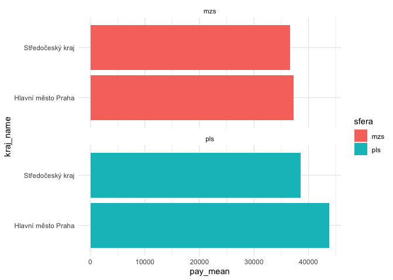

The goal of ispv is to retrieve and load data from the Czech database of average earnings (ISPV, Informační systém o průměrném výdělku).
Installation
You can install the development version of ispv like so:
remotes::install_github("petrbouchal/ispv")Example
The package does two things, either for national or regional data:
- retrieve links to Excel files on the ISPV site for a given year
- read those data and return in a clean tibble ready for analysis
Here is an example for regional data:
library(ispv)
links <- pv_list_reg(2020)
paths <- file.path(getwd(), links$name[c(1, 2, 15, 16)])
purrr::walk2(links$url[c(1, 2, 15, 16)], paths, curl::curl_download)
data <- pv_reg_monthlypay_isco4(paths)
data
#> # A tibble: 545 × 22
#> kraj_id_ispv isco4_full fte_thous pay_median pay_d1 pay_q1 pay_q3 pay_d9
#> <chr> <chr> <dbl> <dbl> <dbl> <dbl> <dbl> <dbl>
#> 1 Pra 1120 Nejvyšší … 1.25 147534. 39480. 66898. 3.04e5 4.48e5
#> 2 Pra 1211 Řídící pr… 2.84 100871. 44964. 68750. 1.59e5 2.20e5
#> 3 Pra 1212 Řídící pr… 0.900 100313. 45651. 64583. 1.66e5 2.37e5
#> 4 Pra 1219 Ostatní ř… 1.62 76178. 31050. 49090. 1.31e5 1.86e5
#> 5 Pra 1221 Řídící pr… 4.88 91330. 38618. 56198. 1.47e5 2.35e5
#> 6 Pra 1223 Řídící pr… 0.989 99731. 45760. 67100. 1.43e5 2.04e5
#> 7 Pra 1321 Řídící pr… 1.44 67123. 20246. 44127. 1.12e5 1.57e5
#> 8 Pra 1323 Řídící pr… 2.07 75469. 31909. 49077. 1.04e5 1.38e5
#> 9 Pra 1324 Řídící pr… 2.40 72326. 35602. 48826. 1.10e5 1.54e5
#> 10 Pra 1330 Řídící pr… 2.81 115329. 52052. 73825. 1.62e5 2.29e5
#> # … with 535 more rows, and 14 more variables: pay_mean <dbl>,
#> # bonus_perc <dbl>, supplements_perc <dbl>, compensation_perc <dbl>,
#> # hours_per_month <dbl>, file <chr>, sfera <chr>, period <chr>, year <chr>,
#> # kraj_id <chr>, kraj_name <chr>, kraj_id_nuts3 <chr>, isco4_id <chr>,
#> # isco4_name <chr>This is a long format data frame, so is easy to analyse and visualise:
library(ggplot2)
ggplot(data_select, aes(pay_mean, kraj_name, fill = sfera)) +
geom_col() +
facet_wrap(~sfera, ncol = 1) +
theme_minimal()
About the data
The data is special in several ways:
- it contains pay and staff counts broken by ISCO-4 level for each region (kraj), further separated into the “wage sphere” and “salary sphere” - broadly private and public sector, respectively
- pay is broken down into regular pay, bonuses, other compensation and other components
This is probably the most detailed labour market data available publicly.
See details on the official page: English and Czech
The data is only available to the public in Excel files, separately for each year and region. This package makes it possible to download and read the data in bulk.
The public sector part of the data is based on individual-level returns provided by each public sector organisation. The private sector part is based on a survey.
The data items are documented in the relevant data loading functions, i.e. currently only pv_load_reg.